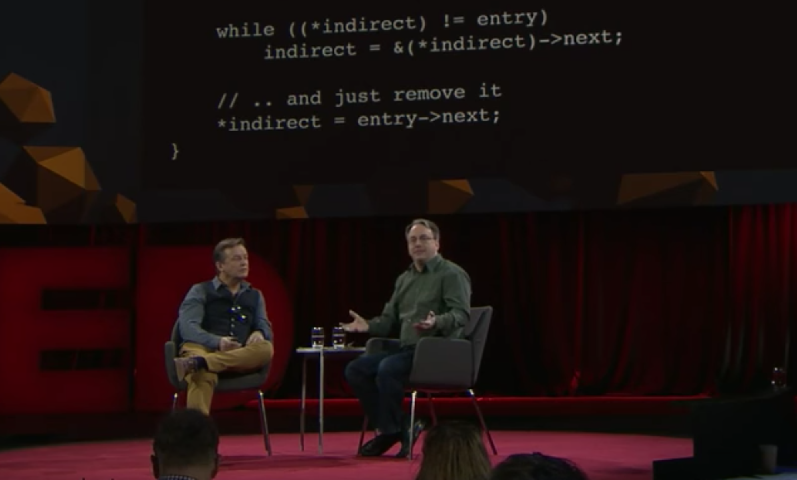

Taste of code

Today I watched a TED talk of Linus Torvalds, Linus took a snippet of code to explain the problem of taste of code.
The code is pretty simple, to delete a certain node in a singly-linked list. Usually the code below is what we have been taught in school:
void remove_list_entry(linked_list* entry) {
linked_list* prev = NULL;
linked_list* walk = head;
//Walk the list
while (walk != entry) {
prev = walk;
walk = walk->next;
}
// Remove the entry by updating the
// head or the previous entry
if (!prev) {
head = entry->next;
} else {
prev->next = entry->next;
}
}
Note that the code have a if statement in the end, in order to distinguish the following two scenarios:
- The deleted node is the head of the list, now it needs a new head
- The deleted node is not the head of the list, now it just need to link the previous node to the next node.
However, Linus thought this snippet of code had no taste, he perferred to the following code:
void remove_list_entry(linked_list* entry) {
// The "indirect" pointer points to the
// *address* of the thing we'll update
linked_list** indirect = &head;
// Walk the list, looking for the thing that
// points to the entry we want to remove
while ((*indirect) != entry)
indirect = &(*indirect)->next;
// .. and just remove it
*indirect = entry->next;
}
Different from the first snippet of code, this snippet of code doesn’t have that if statement. Here we copy the address of next node to the next pointer of the previous node by using a pointer of pointer indirect.
Let’s take a closer look at the code.
Here is the definition of linked_list, nothing special.
typedef struct Node {
int data;
struct Node *next;
} linked_list;
Suppose we have 5 nodes (1/2/3/4/5) in the linked list, head is pointing to first node and we want to delete second node.
entry -+
head |
+---+ +-------+ +-------+ +-------+ +-------+ +--------+
| |---->| 1 | |---->| 2 | |---->| 3 | |---->| 4 | |---->| 5 |NULL|
+---+ +-------+ +-------+ +-------+ +-------+ +--------+
linked_list** indirect = &head; this line will create a pointer of pointer points to head.
entry -+
head |
+---+ +-------+ +-------+ +-------+ +-------+ +--------+
| |---->| 1 | |---->| 2 | |---->| 3 | |---->| 4 | |---->| 5 |NULL|
+---+ +-------+ +-------+ +-------+ +-------+ +--------+
^
|
+---+
| |
+---+
indirect
And we do a while loop
while ((*indirect) != entry)
indirect = &(*indirect)->next;
First indirect points to head, *indirect is equivalent to head, which points to the first node. Apprently, (*indirect) != entry at first, so the while loop continues. In indirect = &(*indirect)->next, if we are familiar with C Operator Precedence, we know that the precedence of -> is high than that of &, so this line is to get the address of the next pointer.
In the last line, since *indirect is pointing to the address of the next pointer of the first node, *indirect = entry->next; will rewrite the next pointer of the first node with the address of the third node, and it’s done, the second node is not a part of the list any more.
entry -+
head |
+---+ +-------+ +-------+ +-------+ +-------+ +--------+
| |---->| 1 | |-- | 2 | |---->| 3 | |---->| 4 | |---->| 5 |NULL|
+---+ +-------+ \ +-------+ +-------+ +-------+ +--------+
*indirect \ /
+------------+
Someone may argue about the readability of the code and it being over-smart, but I don’t want to get involved with these things here :)
My point is, it is really interesting to watch Linus Torvalds to show this snippet of code, because it remind us of refining our code consistently and don’t take the code we have learned in the school as the dogma.
Thanks to the discussion on the Internet:
- 1) Using pointers to remove item from singly-linked list
- 2) delete an entry from a singly-linked list
- 3) Applying the Linus Torvalds “Good Taste” Coding Requirement
EOF